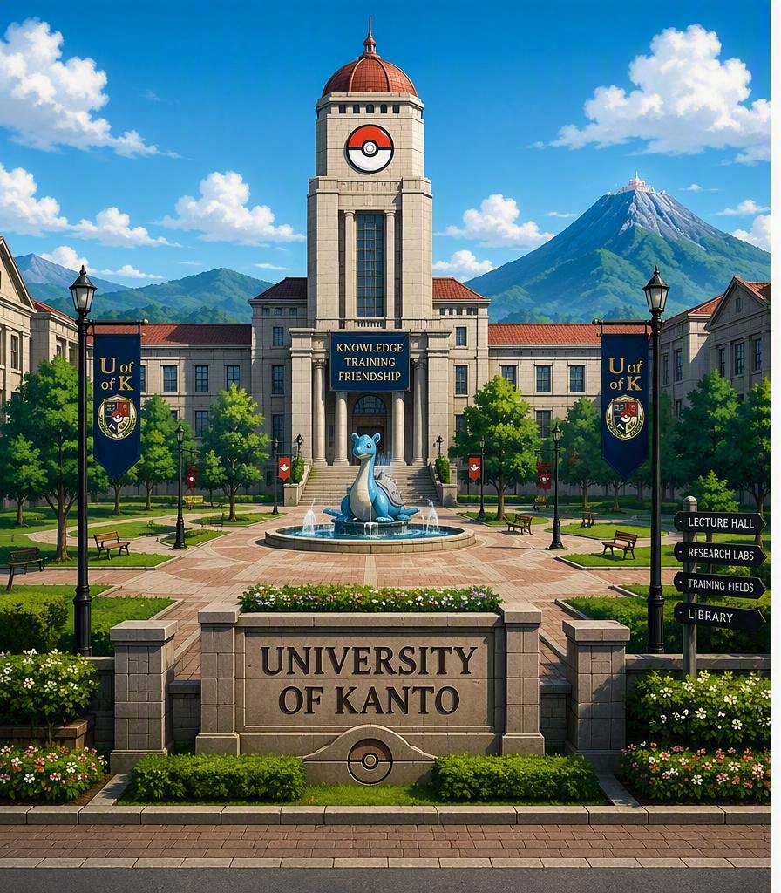

Welcome to the University of Kanto
Located in the heart of the Kanto Region, the University of Kanto is a premier institution dedicated to Pokemon research, trainer development, and scientific innovation.

Quick Facts
- Founded in 1998
- Location: Indigo Plateau, Kanto Region
- Enrollment: over 12,000 Students
- Home of the Kanto Pikachus
Featured Programs
- Pokemon Biology
- Trainer Development
- Pokedex Engineering
- Pokemon Medicine